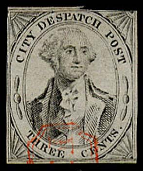
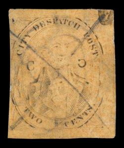
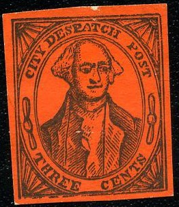
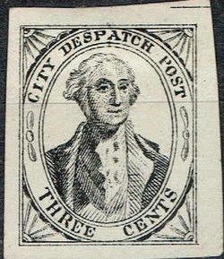
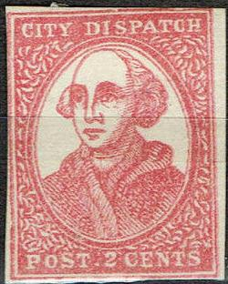
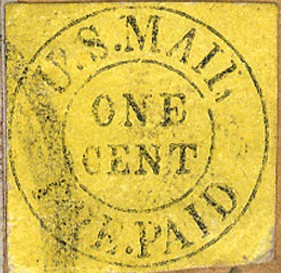

{kind=link}

(Genuine stamps)
Return To Catalogue - USA Semi-official local stamps and carriers - United States
Note: on my website many of the
pictures can not be seen! They are of course present in the cd's;
contact me if you want to purchase the catalogue.

(Genuine stamps)
(Genuine, reduced sizes, images obtained from a Siegel auction)
Inscription "CITY DESPATCH POST" 2 c black on green (1847) 2 c black on lilac (1847) 3 c black on grey (1842) Inscription "CITY DESPATCH POST" with "C" at both sides of head 2 c black on green 2 c black on grey 2 c black on red 2 c black on yellow 2 c black on brown Inscription "UNITED STATES CITY DESPATCH" 3 c black on lilac 3 c black on blue 3 c black on green Surcharged (oldest surcharge in the world, 1850) "2" (red) on 3 c black on green

(Typical cancel, "US" and "FREE" in an
octogonal shape)

Taylor forgeries? or Scott? I've seen
this type of forgeries in many colors: black, black on green,
black on lilac, black on yellow and black on red. The hair at the
right hand side is rather peculiar.
Sperati forgery:
(Front and backside of a Sperati forgery)
Sperati forgery on piece of paper, image obtained from a Siegel
auction. I've seen another Sperati forgery pasted on a similar
piece of paper with the same cancels ('DESPATCH...' and 'FREE').
Examples of other forgeries:
Rather primitive forgery type.

In my view, the side ornaments are placed too high in this
forgery.
Image obtained from a Siegel auction
(Reduced size, image obtained from a Siegel auction)
2 c red

Most likely a forgery
Most likely a forgery of this stamp, 2 c in blue color and
Washington facing the other direction.

Image obtained from a Cherrystone auction
(Genuine, reduced sizes, images obtained from a Siegel auction)
Genuine stamps
(Could be forgeries)
1 c black on red 1 c black on yellow
At least 11 different kinds of forgeries exist. I do not know if all of the above stamps are genuine.
The above stamp is probably the second forgery described in Album Weeds. There is no dot behind the "U" of "U.S.". Furthermore the letters are not positioned alike as in the genuine stamps. For example the "N" of "ONE": in the genuine stamps the first stroke of the "M" of "MAIL" is exactly above the first stroke of the this "N". And the first stroke of this "N" is above the end of the "E" of "CENT" in the genuine stamps (here it is above the center). If I'm well informed, this forgery might have been made by Scott. There seem to be slightly different types of this forgery (see the "P" of "PAID" in the above examples).
Most likely a forgery, "P" of "PAID" slanting
forwards, no dot behind "U" of "U S". The
letters in "MAIL" are badly done.
Another dubious stamp with the lettering very badly done.
I have my doubts about the following stamp:
(Reduced size, probably a forgery)
{kind=link}
{kind=link}
{kind=link}
{kind=link}